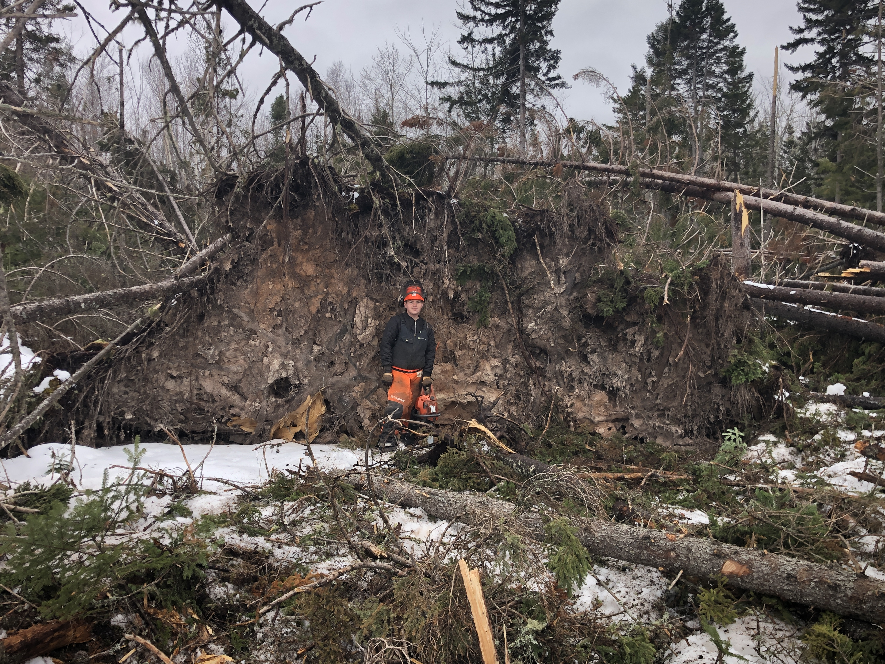

Background

Fourth year electrical engineering student at the University of New Brunswick. I have a strong academic background, completing the International Baccalaureate program in highschool, and staying on the Dean's List througout my time at University. Working on the Reliability team at Michelin and with the LV team at UNB Formula Racing has helped me to hone my project managment and technical skills. Employment as a Residence Assitant and Teaching Assistant at UNB, and being a member of Hill Debate has improved my communication skills.
This preference is what led me to study engineering. Even if I am not the one building the final product, I still get a great deal of enjoyment from the Design process. I chose to go into electrical mostly based off of my aptitude for computers, along with the fact that I enjoyed the coursework associated with it in first year.
Currently, I am taking technical electives (TEs) in robotics and modern controls systems, and pursuing a co-op designation. Next semster, I plan to take power electronics, digital signal processing, and advanced electric machines TAs. A full list of the courses I have taken at univeristy is on my LinkedIn. Along with this, I am pursuing a Technology, Management, and Entreprenurship diploma. This is the best pathway I found to learn the buisness skills that an engineer needs.
Extracurricularly, I am a member of UNB Formula Racing's Low Voltage subteam, where I design criti